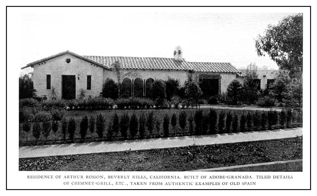
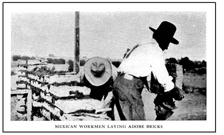

|
 The Revival of Adobe Building in Southern California [BY CLARA FASSETT]
“Little Grey Home in the West,” sung about,
described and pictured so alluringly, has changed its hue; at present
it is anything but grey; it is often salmon pink, blue-green or canary yellow.
Sometimes it is a combination of these, or it may be in neutral tone with
vermillion doors and windowsashes; blue, crimson and orange flowers
in decorative window boxes supply touches of brilliant color in small areas. Surroundings, of course, influence the use of color in small houses, as it is often necessary to build on a correspondingly small lot-which brings into consideration the dweller next door, who may desire a hue which does not harmonize with his neighbor’s color scheme. Taking into consideration the color of sky, ocean, trees and flowers of the Southwest, there is a certain aesthetic satisfaction in houses of cream or buff, with the color note accented in trim and garden planting.  In New Mexico and Arizona, southern California and southwestern Texas, is a revival of “adobe” building, of Indian construction, based on a purely native architecture founded upon the Spanish model built in a simpler way with materials at hand, after the manner of the Indian builders. A few of these old buildings have been reclaimed, of which the Spanish Missions and the “Adobe Flores” of Southern California are famous examples, and serve as models and sources of inspiration for modern builders to study. Most of these have crumbled away, “melted into the earth,” as the Indianbuilt adobes will if not covered with a hard outside plaster The Indian method was to replaster every year, patting and smoothing the finish by hand, which resulted in softly rounded contours and pleasing texture Modern adobes are finished with a hard plaster which preserves the sun-dried brick, and by using color in soft tints, gives an appearance of antiquity. In Beverly Hills, Santa Monica and Hollywood are some fine examples of modern adobe designed and built by Mr. John Byers, who is an authority on this particularly American type of architecture, fathered by the “Native American,” modified to suit the needs of the white conqueror. [Various Views, p.27] The adobes used in the houses designed by Mr. Byers are made by workmen imported from Mexico; men whose trade has been handed down from father to son for generations, and who take a craftsman’s pride in fine workmanship. The method of obtaining clay is simple--it is dug out of the foundation of the house. What comes out of the cellar, with that which is taken off the yard in grading, is sufficient for the walls, It is interesting to watch these brick-makers with trousers rolled up, performing the operation of treading the watered earth; straw and barnyard refuse is hoed and worked into the mass after it has been treaded to the proper consistency. The mud is then set in molds 4x20x18 inches and dried in the sun. These molds are made of clear lumber securely joined and smooth on the inside surfaces. In hot weather ten or twelve days are sufficient to dry the bricks. They are then laid in mortar made of lime and sand. The illustration shows the method of conveying adobes to the bricklayers. The peon’s head is his hod, protected by a little cloth roll the size of a doughnut. Outside plaster consists of sharp sand, cement, and 8 or 10 percent hydrated lime-the latter to make the coating water-proof. About the outside walls chicken or hog wire is used as a reinforcing for the cement plaster. Floors are sometimes of concrete marked off into square tiles; the most satisfactory flooring which harmonizes with the bricks, is a hand-made tile. Mr. Byers, not finding the thing he considers suitable in a commercial product, manufactures his own roofing and flooring tile, expert Mexican workmen being employed for the purpose. The roof of an adobe house, to be in keeping, seems to call for tile. Some houses are roofed with split shakes stained grey or green and put on in a manner which suggests weather staining; but when you realize the thickness of an adobe wall, a tile roof with its warm color note, and its overhang which casts leasing shadows, and forms a substantial protection For the wall, seems to satisfy aesthetically as well as fulfill practical requirements. The inside walls are uniformly plastered, then tinted, left in a rough state or stained. A beautiful finish is obtained by several coats of paint hand rubbed. Another interesting effect is obtained by scraping a steel float along the surface of the plaster, which carries up some of the sand leaving tiny holes, which resembles Travatine marble. The interest of the Spanish Colonial house is not entirely centered upon the front. The rear is oftentimes even more inviting with its bit of garden, its “placita” or little plaza which is really an out-of-doors room. Here one can enjoy his garden, and take out-door recreation without being exposed to public view while so doing. In furnishing and decorating these houses there may be considerable latitude allowed. If your taste runs toward barbaric splendor of color you will surround yourself with rugs and pottery from the Southwest, brilliant in hue and bold in design. Or, you may incline toward the simplicity and severity of the early Missions. One exceptionally beautiful adobe home in Beverly Hills belonging to Mr. Arthur Rosson, is furnished in the Spanish Rennaisance manner, and contains some rare antiques from Seville and Granada, treasures assembled bt the owner during a sojourn in Spain.  |
{kind=link}